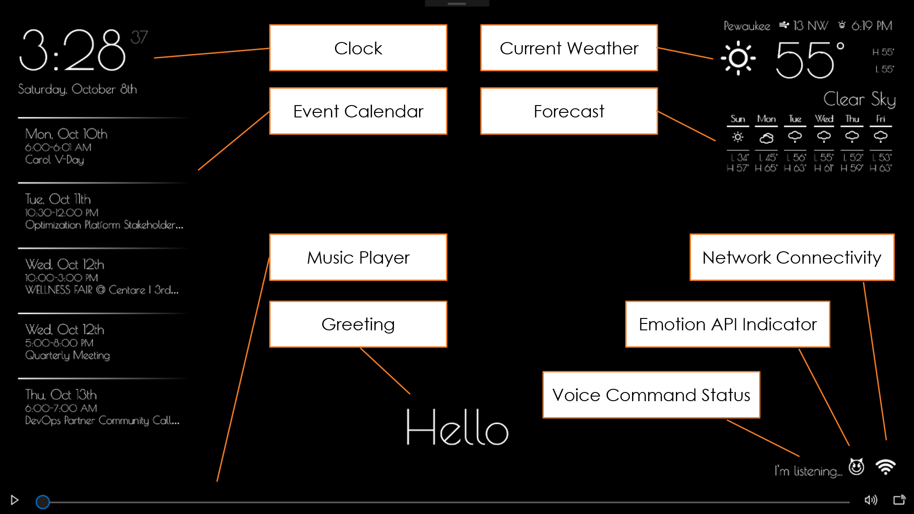
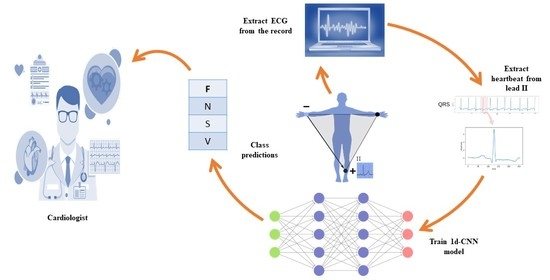

This endeavor is a major project and it required extensive study, experimentation in a chemical lab, and the integration
of multiple technologies like Industrial IOT, mechatronics, Robotics. The main objectives of this project are:
- Build a machine following the planned simulation to automate the entire chemical processes using the mechanical 3D model
-To use modern automation and robotics to the entire plant and verify the output of the plant in real field chemical analysis.
My role....................


A collaborative research project of Duke University & IOE Pulchowk Campus. This system notice ground movement as soon as an earthquake starts, quickly send alerts that tremor is approaching, and give people critical seconds to prepare.

This project is an interactive AVS integrated mirror with the latest news headlines, weather, quotes, time, date using Raspberry Pi, AVS, electron. It is an instrumentation course project. which used .......... It was showcased at LOCUS 2019.

D

A third-year minor project which detects possible arrhythmia of a person measuring their heartbeat through sensors. It's objective is to filter the measured data using hardware and software filters and to train a CNN and optimize it using various deep learning techniques to detect arrhythmia and classify the type of arrhythmia.